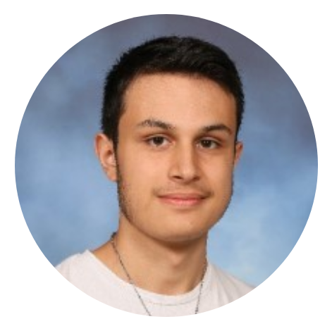
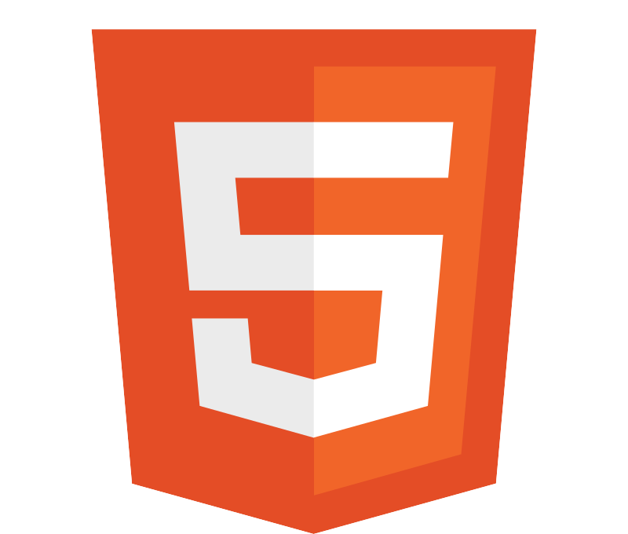
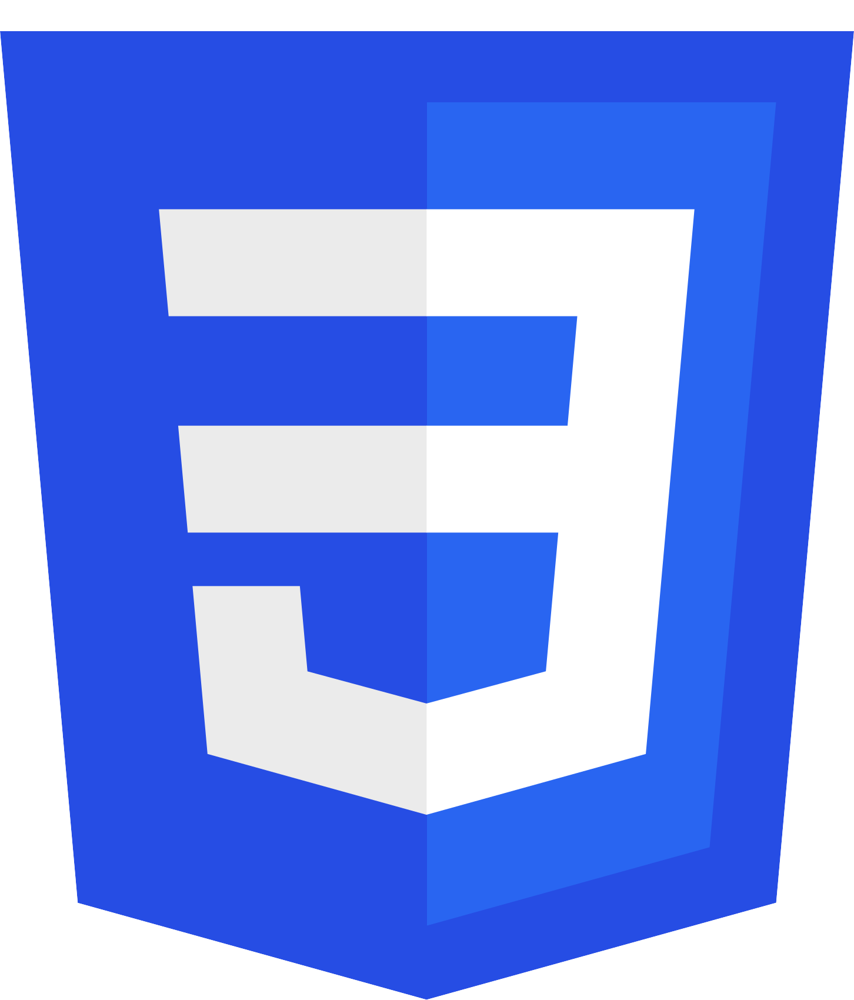
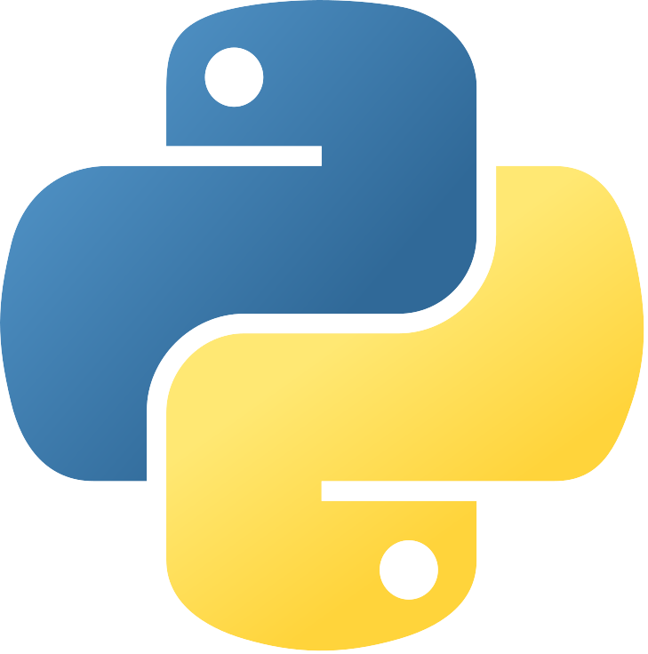
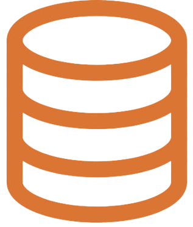

About Me

I am a second-year Computer Science student (BUT Informatique) at IUT 2 in Grenoble. I am especially interested in application development and tools that improve the efficiency of a project. I like understanding how things work and solving technical problems in a structured way. Organized, persistent, and reactive, I progress every day through the projects I work on. I enjoy teamwork, clear communication, and knowledge sharing, while also being able to work independently when needed.
Languages
Level A2
Level A1
My Background
General Baccalaureate
Majors: Computer Science & Maths
Graduated with honors
Lycée Louis Modeste Leroy, Evreux (27)
BUT Computer Science
Currently in 2nd year...
IUT 2, UGA, Grenoble (38)
Versatile Crew Member
McDonald's
Evreux (27)
Professional Skills
Optimize IT applications
Develop software applications
Work within an IT team
Technical Skills

HTML5
CSS3 Java
Java

Python
SQLMy Projects
Goblet of Souls
Project Overview
Goblet of Souls is an action-adventure game set in a fantasy world where a royal goblet has been stolen, and the player must retrieve it. This is my first video game created in C# with Unity, using only free assets.
Project Goals
This project is primarily a learning experience: I am exploring game programming, level design, implementing gameplay mechanics, and managing assets. The goal is to master the basics of game development in order to move on to more ambitious and concrete projects in the future.
Progress and Next Steps
I am currently working on the core mechanics, levels, and interactions. A first playable version will be available soon, allowing testing of basic gameplay, movement, combat, and progression within the fantasy world. This project allows me to progress at my own pace and document each stage of my learning process.
Proxizen
Project Overview
We are currently working on a project to create an application designed to make life easier for caregivers supporting people with Alzheimer’s disease. The goal is to centralize and organize important information, track daily activities, and provide assistance tools tailored to the users’ needs.
My Role
I am involved in the design phase and currently developing the backend of the application. This includes managing databases, creating APIs, and organizing the server logic to ensure a reliable and secure operation of the application.
Objectives and Challenges
This project allows me to apply skills in backend development, application architecture, and user-centered design. The main challenge is to create a robust and accessible tool that simplifies daily management for caregivers, while ensuring the confidentiality and security of personal data.
Checkers Game
Design and development
In 2023, I completed a school project that involved creating a game of our choice. I decided to build a checkers game in Python using Tkinter. The goal was to develop a functional, intuitive game that followed the official rules. I handled the entire project: game logic, movement handling, captures, and a dynamic graphical interface.
Skills acquired
This project helped me strengthen my skills in OOP, Tkinter event handling, and modular code organization. I improved my logical problem-solving abilities, optimized functions, and applied a rigorous and autonomous workflow. I used Visual Studio Code to complete it.
Executable version
I also created a ZIP file containing a standalone executable (.exe), allowing anyone to try the game without installing Python or Tkinter. You can download it below.
 Download the game
Download the game
Gvent
Project Overview
At the end of the first year of the BUT Computer Science program, I participated in the development of Gvent, an application for managing video game events, created in a team of five students. The project had to be completed within a limited time, which pushed us to organize our work efficiently and structure the development process. The main goal was to design a clear, functional application aimed at facilitating the management and tracking of video game events.
Role as Project Manager
I took on the role of project manager, which involved task allocation, coordinating team members, planning development stages, and ensuring the overall consistency of the application. I also clarified the objectives for each sprint and maintained internal communication so that everyone could work efficiently towards the same goals.
Development and Architecture
We used IntelliJ IDEA for Java development and Scene Builder for creating JavaFX graphical interfaces. The application was built following the MVC (Model - View - Controller) pattern to clearly separate logic, display, and user actions. This architecture allowed us to achieve cleaner, modular, and maintainable code.
Download the app
Alten Project
Project goal
During my first year of Computer Science, I worked on a group project aimed at recreating the Alten company website, but adapted for middle-school students. The goal was to make the content more accessible and easy to understand for a younger audience, while keeping the original structure and slightly adjusting the visual identity. We developed the site using HTML, CSS and JavaScript to create a dynamic and intuitive interface.
My role in the team
In our team of four students, I was responsible for developing the "Business Sectors" page. I worked on content structuring, layout, and interactivity to make navigation fluid and pleasant for users. I integrated JavaScript menus and optimized the CSS design. This helped me strengthen my skills in HTML structuring and native JavaScript manipulation.
Project management
In addition to my main task, I also informally acted as a project manager. I coordinated tasks between team members, ensured deadlines were met, and maintained consistency across the entire website. This experience improved my teamwork abilities and gave me a better understanding of project-management responsibilities.
 Visit website
Visit website
Aqua Athletics
Project overview
At the end of my first year, we created a website (in English) for a fictional company offering lake-side watersport activities. The objective was to design an attractive and functional platform where users could browse available activities, obtain practical information, and even simulate a reservation. This project allowed us to practice the full web-development workflow, from mockups to final code.
Teamwork and skills
This project used several of the skills we had acquired during the year: HTML, CSS, JavaScript, project management, and collaborative work. One of the main objectives was to divide tasks efficiently while ensuring consistent visual and functional design. We also applied responsive design and accessibility principles.
Tools and organization
We used tools such as Visual Studio Code for development, GitHub for version control, and Whimsical for mockups. The project helped us deepen our understanding of web technologies, organize teamwork, and improve our approach to building intuitive user interfaces. It also strengthened our communication and collaboration methods in a technical context.
Visit website
Contact Me
If you are interested in my profile, feel free to reach out using the form below or through my social networks.
 Nathanaël Galat
Nathanaël Galat Tokachioff
TokachioffThe information sent through this form is only used to respond to your messages and will not be stored for commercial use.